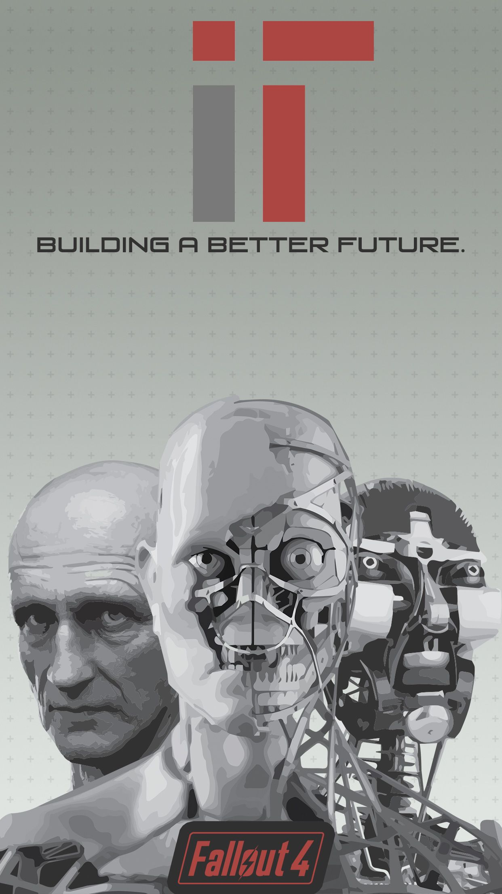

The Institute was built upon what was once known as the Commonwealth Institute of Technology, or C.I.T. While the college itself laid in ruins for more than two centuries, at the time of the Great War, those present took refuge underground. The Institute was formally founded by the children of the original survivors, who dug into the earth and built increasingly sophisticated residential facilities and laboratories, starting an ongoing process of infrastructure expansion. Isolated from the outside world, the scientists continued their work, disregarding the mayhem and destruction occurring outside of its grounds. As they worked on creating synths, they attempted to work peacefully with the people of the Commonwealth using first generation synths as well as help create a new stabilized government, but mutual mistrust and infighting ended that relationship quickly and they returned to isolation. Eventually, the scientists have utterly put ubiquitous pre-War technology to shame.
the ultimate goal of the Institute is energy independence, which they believe can be achieved by restarting the ancient nuclear reactor once used by the C.I.T. to perform experiments and providing the Institute with near limitless power. The design has been revised and the reactor itself extensively upgraded and improved, turning it from a testing reactor into a proper source of electricity. Activating it would free the Institute from the need to compromise and sacrifice, and especially drawing power from above-ground installations.